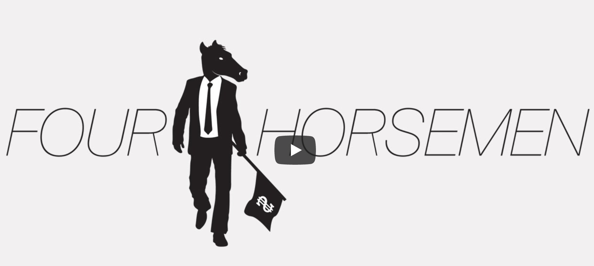

Four Horsemen
This is one of the best documentaries I have ever seen. It was made 9 years ago but is more relevant now than ever.
They speak about how the Internet might change everything. However, now we realize that the Internet has also become corrupted and lost. It's time to recreate it.
Transcript
Four Horsemen - Feature Documentary - Official Version
"All experience has shown that mankind is more disposed to suffer - while evils are sufferable - than to right themselves by abolishing the forms to which they are accustomed."
- American Declaration of Independence.
A Renegade Economist film.
"People are awfully forgiving. They just don't understand what has been done to them. We are at an epochal shift. We're at a point where the West could tip into a complacent and quite well off redundancy or we could play a decisive role in the future.
What the banks did was reprehensible. That was why there was the outrage at the greed of the bankers when we gave them money that was supposed to help them lend to others, but they decided to use that money to pay themselves bonuses - for what, for record losses?
We are governed by corporations today, often by corporations that don't have very much interest in the United States of America. I don't know what happened man, what happened to the U.S., it went so far in the ditch. You know, what... at what moment did it all go bad? Was it Disco? Was it Donna Summer? Is that what killed America?
We are entering The Age Of Consequence. A rapacious financial system, escalating organised violence, abject poverty for billions and the looming environmental fall-out are all converging at a time when governments, religion, and mainstream economists have stalled. War, Conquest, Famine, and Death - the Four Horsemen are coming.
FOUR HORSEMEN.
This is not a film that sees conspiracies. It is not a film that mongers fear. It is not a film that blames bankers or politicians. It's a film that questions the systems we've created - and suggests ways to reform them.
Over centuries, systems have been subtly modified, manipulated, and even corrupted often to serve the interests of the few. We have continually accepted these changes and, because man can adjust to living under virtually any conditions, the trait that has enabled us to survive is the very trait that has suppressed us.
Most societies have an elite and the elites try to stay in power. And the way they stay in power is not merely by controlling the means of production, to be Marxist, i.e. controlling the money, but by controlling the cognitive map, the way we think. And what really matters in that respect, is not so much what is actually said in public but is what is left un-debated, unsaid.
For centuries gatekeepers have manipulated our cognitive map. But in 1989 a computer scientist by the name of Tim Berners-Lee implemented the first successful communication between an HTTP client and server. The World Wide Web was born. It has since unleashed a tsunami of instantly accessible, freely available information.
Just as Gutenberg's printing press wrestled control of the cognitive map away from an ecclesiastical and royal elite, today the internet is beginning to change governments, finance, and the media. We are at the cusp of change. But to enact it we must first understand the things that have been left unsaid for so long. To do that we need context from people who speak the truth in the face of collective delusion because to understand something is to be liberated from it."
EMPIRES
*"All a great power has to do to destroy itself is persist in trying to do the impossible." *
- Stephen Vizinczey
At the end of World War II, we had 50% of the world's gross domestic product, we were making 54,000 airplanes a year, 7,000 ships, etc etc. We were the new Rome. And we recognized it, and devised a power management scheme in the 1947 National Security Act to, we thought, manage it and it worked fairly well during the Cold War. But we haven't done anything since and I think that is another sign of our inability to grasp the "new world," if you will.
Empires do not begin or end on a certain date. But they do end, and the West has not yet come to terms with its fading supremacy.
At the end of every empire - under the guise of renewal - tribes, armies, and organizations appear and devour the heritage of the former superpower, often from within.
In his essay 'The Fate Of Empires,' the soldier, diplomat, and traveler Lieutenant-General Sir John Glubb analyzed the lifecycle of empires. He found remarkable similarities between them all.
An empire lasts about 250 years, or ten generations, from the early pioneers to the final conspicuous consumers who become a burden on the state. Six ages define the lifespan of an empire.
The Age Of Pioneers
The Age Of Conquests
The Age Of Commerce
The Age Of Affluence
The Age Of Intellect
Ending with bread and circuses in The Age Of Decadence.
There are common features to every Age Of Decadence. An undisciplined, overextended military, the conspicuous display of wealth, a massive disparity between rich and poor, a desire to live off a bloated State, and an obsession with sex.
But perhaps the most notorious trait of all is the debasement of the currency.
Purchasing power of $1
The United States and Great Britain both began on a gold or silver standard, long since abandoned. Rome was no different. So it started on a principle that was very sound and it was on a silver standard. But as it corrupted further and further and further the Roman denarius got to the point where it was basically a copper coin and they learned how to plate and it was washed in silver and in circulation the plating came off. And at the end all the senators that really did at one time represent the people only were interested in representing how much wealth they could steal at the top.
Great empire wealth always dazzles, but beneath the surface the unbridled desire for money, power, and material possessions means that duty and public service are replaced by leaders and citizens who scramble for the spoils.
Historically all the signs of the demise of the empire are beginning to develop, some are more trenchant than others. This current financial and economic crisis, that sort of thing, always accompanies the demise of empire.
THE PEOPLE OF ROME
The people of Rome were constantly being distracted by the gladiatorial events, and the politicians knew that they did this. Whenever there was unrest among the people, they had a huge event going on, and they created a new event with lots and lots of gladiators. And every day, we‘re doing that. That is a common trait of declining empires. And so today, in the U.S. for example, you find a tremendous emphasis on all kinds of television programmes that distract people from what's really is going on. Sports is a big part of that, as it was in gladiator times. In essence, we've been lulled into a lethargy and we've accepted it.
Just as our sports stars today earn vast sums, so did Roman charioteers. In the 2nd century, one by the name of Gaius Appuleius Diocles amassed a fortune of 35 million sesterces in prize money - equivalent to several billion dollars today. Strangely, perhaps, there is another profession that is disproportionately hallowed as an empire declines. The Romans, the Ottomans, and the Spanish all made celebrities of their chefs. And this again is typifying the end of an empire, where things were so great we have this last oomph of momentum, that we used to be great, and we felt great, and we don't feel it anymore. So everyone is out searching for it. Well, maybe it's in the best food or the best clothes or the best music or the best movies or a reality TV show or another magazine. But you can never get enough of what you don't need. What you need is a strong moral conviction that is pervasive throughout the society... and integrity reigns.
There is a vast apathy. There is a vast amoralism, even a political nature to it, that is to say there are vast numbers of people who don't give a damn. And so there is this - natural, I suppose - entropy, any living organism which an empire is of course, over time dies. The question is: How does it die? Does it die in a violent cascade of events? Or does it die over a long period of time?
The Baby-Boomer Generation were born into this Age of Decadence. Perhaps unwittingly they've broken the unspoken intergenerational contract. Through unfettered consumerism, spiraling house prices, and a desire for eternal youth, the Baby-Boomers have squandered future generations' inheritance. My generation, the generation right after my generation, I think we forgot that little phrase in the preamble to our Constitution which says "and our posterity." All of a sudden it became "us". Period. The Baby-Boom generation which I'm a part of has gone and done the biggest misallocation of capital in the history of mankind. We have had cheap oil or cheap energy is a better way to phrase it, we have had an abundance of ideas and we have chosen a system and perpetuated it that is probably one of the worst ways to use the blessings that were bestowed upon us, and we are going to pay a price for that.
Human beings are inconsistent and paradoxical. We hope for peace and immortality, but continually invent new ways to destroy each other. We're capable of the kindest, most noble acts; and the most horrific atrocities. Human beings are complex creatures. I mean, for example, we‘re capable right now, at this minute, of acting in such a way as to make it likely, if not certain, that our grandchildren are going to face terrible disasters, and we are consciously acting to accelerate that likelihood even though we all love our grandchildren. How can we be more contradictory than that?
In spite of all the economic activities of the last 50, 60, 70 years, since the Second World War, and all the industrialization, we have not yet managed to solve the problem of poverty, deprivation, hunger, malnutrition. Millions of people every night go to bed without food, and millions of people are throwing away their food. Waste on one hand, and poverty and deprivation and hunger on the other hand. Malnutrition on one hand and obesity on the other hand. What kind of system have we created? Why, with such brilliant knowledge on the planet, are we still struggling to distribute wealth fairly? How has the human race developed a flawed system of government and economics that serves the few at the expense of the many? And with such poverty in an age of plenty, why have we not had the will to change such a vicious social structure? Greed is the fundamental kind of ingredient for the immoral economy. The problem is not that there is not enough in the world. People say that there is poverty we have to create more wealth. There is enough in the world for everybody's need - as Mahatma Gandhi said, but not for anybody's greed. But is it just greed, or does it go deeper than that? Is the problem systemic?
BANKING
*"When plunder becomes a way of life for a group of men living together in society, they create for themselves in the course of time a legal system that authorizes it and a moral code that glorifies it." *
- Frederic Bastiat
As a civilization, we've obviously had a great run. We've done very well - we had the Industrial Revolution; we survived that. We built a lot of modern military technology; we have survived that, so far. We built a banking system, and we're still struggling with that part of it, but you know, we've had a good run. It's kind of like when I was working on Wall Street for 7 years I had the experience that some people would have working at a meat processing plant, they become vegetarian, and you work on Wall Street and you see how these banks like Goldman, J.P. Morgan, these other banks make money, when you see money, it kind of makes you sick!
Well, I think if the people knew what the banking system is up to, as Henry Ford said, there would be a revolution tomorrow morning. The fact is most people think that what a bank does is lend you money that someone else has put in the bank previously. But what a bank actually does, what a commercial bank does, is to create money from nothing, and then lend it to you at interest.
If I do that, if I manufacture money in my own home it's called counterfeiting. If an accountant creates money out of nothing in the company accounts, it's called ‘cooking the books', but if a bank does it, it's perfectly legal. And so long as you allow fraud to be legalized then all kinds of problems are going to pop up in the economic system you can't do anything about.
Private banks create money out of nothing and lend it at interest. Now, that sounds absurd. When I teach sophomores, you know, about money and banking, and how banks... they never believe it. And so you have to go through it again and again, 'Yes, banks really do create money, they really do, here is how it happens.' And it's absurd! And they're right to doubt that that could possibly be what's really going on. But it is!
Now if the banking lobby is very strong, they're going to say: "Well, we don't want to change this system, we're making so much money out of it. What we have to do is: Try and convince the people that it's their fault, that their wages claims are too high and that's why we're having lots of inflation," or "People are speculating on housing and that's why house prices are going up."
What they're not going to say is that this is happening because banks are creating money out of nothing and pumping it into the system, and that's why prices are going up. But how is it that we've ended up with a system in which banks have the power to create money?
Since 1971, when President Nixon took the United States off what was left of the gold standard, the world has operated under a system of money known as 'fiat'. The dollar, the pound, the euro are all government fiat currencies. Fiat is a Latin word meaning 'let it be so'. It is the law that this government currency be money. Indeed, without that legal enforcement and the fact that we must pay taxes with this money, that dollar bill or that computer digit that represents a dollar would be pretty much meaningless.
Only the government has the power to issue fiat money, but banks can create it through lending. Over the last 40 years, since this system of fiat money became the global norm, the supply of money has grown exponentially. In fact, we've have seen the greatest growth in the supply of money in history. But who benefits?
Of course, those that have the power to issue money: governments and banks. Then, those companies and individuals that get this money early. They can spend it before the prices of the things they want to buy have risen to reflect the new money in circulation. In other words, they get services, products, or assets cheap.
But prices soon rise, so holders of assets, such as houses or shares, will then see gains without there necessarily being any improvements to the company or house in question. Often this can lead to speculative bubbles. But what about those at the bottom of the pyramid? Those on fixed wages or incomes, those who live in remote areas or those with savings?
By the time this newly created money has filtered down to them, the prices of the things they want to buy have increased, their savings buy them less however, and their wages remain largely unchanged. In some cases, they have to take on debt just to afford the things they were previously able to buy, which means they have to go back to the banks.
In reality, this process of creating money only redistributes wealth from the bottom to the top of the pyramid. And thus that ever-increasing gulf between rich and poor gets bigger and bigger... ...and bigger.
Well... when you get off the gold standard and you go into a fiat money currency combined with a fractional reserve banking system, you end up compounding debt faster than you can ever possibly produce to support that debt. So eventually you are going to find yourself back into debt slavery. And that's what's happened in the U.S. For every dollar GDP, for example, in the U.S. it now also creates something like $5.50 worth of debt, because this is what happens when an economy flips over and basically capsizes. And of course, the government solution now to address all the problems is basically to create more debt.
You can never get enough of a currency that doesn't work, you can print it till kingdom comes but you can't print wealth and you can't get yourself out of debt by making more debt. If you could print wealth, Zimbabwe would be the largest, most prosperous country on the planet - we all know it doesn't work.
Of the money in the world today, 97% is of it is debt. The French philosopher Voltaire once said, 'All paper money eventually returns to its intrinsic value - zero'. For three generations, the world watched the fight between capitalism and communism. But in the 1980s the Russian economy started to collapse, the Soviet Union capitulated and so-called capitalism reigned supreme...
Before 1989 we had a battle between communism and the market. And in that battle, there was a sense of 'let's not expose the flaws in the market economy.' This is too important of a battle that you don't criticize ‘our team' while we're fighting ‘their team'. And their team, social authoritarianism, with a failure to deliver well-being to their society, it was very clear that if you had to choose between these two, which was better?
Communism failed first for various reasons: it was inefficient, human rights lack of respect and so forth. So capitalist West has been continuing in a triumphalist mode thinking "Our adversary has failed, that means we're doing everything right". Both systems are trying to do something which is fundamentally impossible: Grow forever. And they're both going to fail. One failed first. Capitalism's going to fail... later. Or it's failing now.
America right now is in a very interesting position. Because in the past 200 - 300 years of its history, it's a culture and country which has almost always existed on the assumption that resources could be expanded. If there was a problem, you always tried to deal with it by expanding the pie, ‘Go West young man'. Make the pie bigger so that everyone has got a bigger piece. Now it's facing a world where possibly resources are beginning to be more constrained, and where it's going to have to divide up that pie, and inflict pain on people. And that's something which it is not well prepared for.
How has the country moved so far from the intentions of its founding fathers? How has the American dream become so distorted?
Over the last 30 to 40 years, capitalism has taken this extreme form, and a lot of it goes back to the economist Milton Friedman, from the Chicago School and Ronald Reagan, and Margaret Thatcher, and others buying into these policies, that really encouraged people to take on huge amounts of debt, encouraged privatization, smaller governments supposedly, although bigger militaries, so actually... ...the government spending goes up. U.S. Military Spending. Deregulation, getting rid of rules that govern the people who run our institutions, especially our corporations. It's as though we are suddenly supposed to believe that the human beings who stood at the top of corporations don't need to be regulated. They are some sort of... gods!
Milton Friedman, his protégés, the Chicago Boys, and the neoclassical ideology beat the classical approach to economics and became the framework for what we today call capitalism. There are two main competing economic approaches which determine how we humans manage the world and distribute wealth. These are the classical and neoclassical schools.
The classical school favours less government interference, more personal autonomy and recognizes that humans cannot function without natural resources. The neo-classical school, which has a more dismissive view of natural resources, thinks government should rule the economy, solve social problems and leave the free market to look after the distribution of wealth. The neo-classical school emerged around 100 years ago due to vested interests' desire to protect their assets. This meant that neo-classical mathematical models and assumptions were divorced from reality. They are based on "what ought to be" instead of the classical models which are based on "what actually is".
It's these neo-classical models - which favour large corporations - that have been used to legitimise the financialization of the global economy. Championed by Ronald Reagan and Margaret Thatcher, neo-classical economics still dominates policy-making today. The Reagan revolution, as it's called in the U.S., obviously the Reagan-Thatcher revolution, to think about it more globally was a big change in power structure and a big transfer of opportunity and wealth. Now it's not that the poor gave it to the rich, it was a transfer within the well-to-do, so that the financial sector in particular in the U.S. for example, but also in the UK and some other places, became vastly more profitable, and wages in that sector went up a lot, we focused on bonuses, but also base salaries went up - overall compensation.
In 1932, in the aftermath of America's Great Stock Market Crash, a piece of legislation was passed to protect society. The Glass-Steagall Act was introduced to separate ordinary high street banking from investment banking. 67 years later, in 1999 - under the influence of Treasury Secretary Larry Summers and his predecessor Robert Rubin - President Bill Clinton repealed the Glass-Steagall Act. Once again banks could take ordinary depositors' money and speculate with it on virtually anything they liked.
Wall Street has become a very particular type of casino. And it's unfortunately not the kind of casino they have in Las Vegas which is, you know, a perfectly legitimate form of entertainment. It is a casino that has massive negative repercussions on the rest of society. So it's not just losing your money on a few wild nights, it's about the way in which those organizations lose their money impacting the whole of society leading to a massive loss of jobs.
This unfettered gambling pushed the entire global financial system to near collapse. With balances and debt obligations larger than the GDP of entire countries, the banks had become too big to fail. The West was unprepared and bankers met their reeling and disoriented governments: "You have to bail us out, we need money, if you don't give us the money the whole thing goes down. And what are you going to do with millions and tens of millions of people who have lost everything in their bank account? You will have a revolution on your hands. So fork over the money. Borrow... borrow the money, create it out of nothing and give it to us, so that we can face our problems and not go under... or otherwise."
And this is what Mr. Hank Paulson did in the U.S. Congress. He just went there one day and he told them: "We need $700 billion, and we need it now - or else."
Is this system we call capitalism really capitalism? In a capitalist system government is supposed to be small. But today the state is more bloated and invasive than it's ever been. Individuals and companies are supposed to operate in a free market. Good enterprise is rewarded with profit and flawed enterprise with failure.
But during the 2008 banking crisis, the people saw the Western economic system divided in a way they were told could never happen. Socialism for the rich, capitalism for the poor. And in America for example, the banks that got in trouble got bailed out by the government, that's socialism. And they... people are arguing against socialism in America, and yet this is probably the most socialist country in the world right now.
We have a system which isn't even a proper capitalist system; rich people make mistakes, they don't get punished, poor people make mistakes and they get punished, or even worse, that they don't make any mistake and they are forced to pay for the mistakes of the rich. When the taxpayer is footing the bill for the misplaced speculation of bankers then suddenly instead of the economy serving the human being, the human being is now in perpetual service to amoral financial organizations.
It was the Head of the Federal Reserve Bank, Alan Greenspan who, after 9/11, slashed interest rates to encourage lending. Bankers needed new participants to keep cash flowing into a system that had become a global pyramid scheme. All this newly created money entered the housing market and created unprecedented inflation - house prices rose and rose. New mothers were forced back into the workplace to service huge home loans, and the Anglo-American dream became all about land speculation.
The housing market in the West isn't about ownership. The housing market's in the West because it's the only way ordinary people can get ahead, and ordinary people can't get ahead but by wages. What we've created is a mass bubble economics around housing, as that sucks in a huge amount of capital, takes capital for genuine innovations in the economy, and puts it into a speculative use that has no genuine productive outcome.
It's interesting, if you talk to people in Germany, for example, they don't see a connection between owning a piece of property and their being inclined towards being democratic. There are lots of people who rent their housing there and they are perfectly comfortable with that arrangement. But it is true that in somewhat different contexts both Mr. Reagan and Mrs. Thatcher pushed for more people to own housing, and actually, this is part of the problem because if you push people to buy housing before they are ready, if you push very dubious loans on them, and they don't understand what they're getting themselves into, you can have huge adverse repercussions. Exactly what led to, in part, the subprime housing crisis in the United States.
That's not anything to do with democracy, that's just a bad economic idea. The breakthrough that occurred around the year 2000 in the U.S. was when bankers found out that the poor are honest. They realized that if you're poor, if you're not rich, you have a different set of values, and you think that a debt is a debt and it's something that has to be paid. And the people will try to pay the debts that they are stuck with, even if the debts are not valid. Even if the debts are much more than they expected, even if they really can't pay the debts.
The lending and banking institutions, when they drew up contracts with interest rates, with flexible interest rates, I think they knew in the beginning that these problems were going to come back later on when folks weren't going to be able to afford the mortgages. As the interest rates increased, they put a lot of people in situations where they were taking food out of refrigerators, taking kids out of higher education, they're not able to afford college anymore, and it is making a really, really bad situation worse.
The banks engaged in what was a criminal conspiracy, to charge more to the Blacks and Hispanics. The banks got together, backed the Bush administration, to block the state prosecutions of racial lending in order to exploit and charge more to the minorities. These were loans which were made by one of the major lenders in the city and in this country, Wells Fargo, in which Wells Fargo targeted minority communities in the city; put borrowers into loans that they could not afford, put borrowers into loans that were of the subprime variety, therefore more expensive and less advantageous to the borrowers. Hiding predatory lending practices in the small print of complex financial products was only ever going to enrich one set of interests.
Many of the communities in which African-Americans live in the city, were establishing momentum, there was development activity that was occurring, we were seeing signs of vitality in many of these communities, and... the results of the Wells Fargo foreclosures and the subprime lending practices of that lender, and others, has significantly impaired that progress and brought it to a halt. They don't come into the heart of it. Like you in the heart of it so you see, they don't really see the trouble if they don't come into the heart of it, they stay on the outside of it. That's like looking at the cover of a book and seeing the outside of a book but if you don't go inside the book, then you will never know what the book is about. So they're not worrying about nobody else but themselves. And I think it's wrong because if they come in the heart of it and they see, they'd be willing to help.
What happened in Baltimore is just one example of what is happening all around the world. One way to frame this injustice is by branding it a race issue. But when we look really closely, we can see that there is something at play here that transcends race.
Profit. Not an accident, for instance, that we had the deregulation of our financial industry that was such a disaster. The lobbyists of the finance industry amount to five per congressperson. They pay five people for every congressman to explain to them, persuade them, that they should pass legislation that is favorable to the financial industry. The poor people who are devastated don't have the money. They couldn't hire five per congressman. So the way our democracy works - it's an unlevel playing field.
The financial sector has acquired enormous power, partly through political contributions, so buying favors, but mostly through ideological control, convincing people that finance is good, more finance is better and unregulated finance without limit is best. And that is really the cornerstone of this, what we call in the U.S., the Wall Street-Washington corridor. I mean if people need any proof as to who is controlling Washington, when the bailout came after Lehman Brothers collapsed, 80% of the population were against the bailout. Notwithstanding that, the Congress passed the bailout just showing, in my view anyway, that it's really under the control of banking interests.
It's not a reflection of good democracy when a company, a group of companies, an industry, says: "Our interests are more important than the national interest." How can that happen? Very easy: That's the role of campaign contributions, lobbying in America's political structure. We have a flawed democracy. This is an advanced oligarchy, in the sense that its main mechanism of control, if you like, is through convincing people that you really need, for example, the 6 biggest banks in the United States, in the particular form they exist today, with the very light level of regulation. And if you don't have them, if you try to change that, all kinds of awful things will happen. And this is not really blackmail. It sounds like blackmail, but they convince you it's not blackmail, it's just the way the world is, there's nothing you can do about it. Oh my goodness, you just have to cooperate with them. Yeah, it's very clever.
The Fed is essentially the lobbyist for the commercial banking system. When you say you want to turn regulation over to the Fed, you are saying the financial sector and Wall Street should be self-regulated. And Wall Street has veto power over whoever is going to be the Head of the Federal Reserve. As long as you give veto power over the regulators to Wall Street, as long as you pick the bank regulators from the banking industry itself, you can forget any thought of calling it "regulation". It's "deregulation". And to call it "regulation" instead of "deregulation" is using Orwellian double-think.
Democracy is government by the people. Plutocracy is government by the rich. In a typical plutocratic state, economic inequality is high, social mobility low, and, because of continuous exploitation of the masses, workers find it nearly impossible to climb out of poverty. The Equal Voting Rights movement in the early 20th century abolished a system where rich people had more votes than poor people, but today lobbying has put pay to that and reduced the American political system to a mere clearing house for the concerns of the rich.
The Goldman Sachs machine is one of using profits to buy influence in Washington, to change laws to make it easier to make money on Wall Street, to be used to buy influence in Washington. So it's a self-reinforcing malfeasance machine that is continuing to grow as a parasite in the economy and continuing to kill the host.
Famous for claiming it did ‘God's work', Goldman Sachs is one of the most influential investment banks in the world. Its alumni often occupy positions of great influence in governments and central banks. In September 2008, barely a month before the stock market crash, Goldman - supposedly a pillar of the free market - changed its banking status from investment to commercial. This meant it was now eligible for state protection. Socialism for the rich, right there. Goldman Sachs are extremely efficient at what they do. Their task is to make money, they make bank robbers like Willie Sutton look like modest amateurs. They're huge bank robbers, but it's legal. The system is set up so that they can do it.
In recent years they have been selling securities put together from mortgages that they knew were worthless, so they are selling these things to unwitting consumers, making a ton of money out of it. Meanwhile, they are betting that they're going to fail because they know that what they are peddling is rotten. So they placed bets with credit defaults, and lots of other things with the huge insurance company AIG, and that was insuring Goldman Sachs against the failure of the stuff they are peddling.
During America's subprime collapse, Goldman traders Michael Swenson and Josh Birnbaum made a $4 billion profit by short selling junk mortgages. Backed by Dan Sparks, internally Goldman Sachs called their position the ‘Big Short' and bet against their own clients. Senator Carl Levin called Goldman Sachs Chief Executive Lloyd Blankfein to a Senate subcommittee to testify under oath. Much has been said about the supposedly massive short Goldman Sachs had on the U.S. housing market. The fact is, we were not consistently or significantly net short the market in residential mortgage-related products in 2007 and 2008. We didn't have a massive short against the housing market, and we certainly did not bet against our clients.
Riding the Big Short in 2007 made billions of dollars for Goldman. And so far, they've got away scot-free with this massive heist. So they're now back, bigger than before, richer than before, biggest profits they've had in history, huge bonuses... They're doing great! A lot of what they are doing has, in fact, probably... maybe all of it, has almost nothing to do with the benefit of the economy.
Can there be any objection to genuinely talented people earning big money if they bring something new and tangible to the world, if they take great personal risks with their own money, and actually bring greater prosperity for all? In a free market, if I have a brilliant idea that I can run an automobile on grass clippings, as an example, and I produce that car, my motivation might be to make money. But if the market says: "My goodness, this is the greatest automobile ever invented by mankind", and I make a billion dollars, I've not only served myself but I have served everyone else that needs transportation. And that is the brilliance of our free market, is that paradox that you can serve yourself and simultaneously serve others. And that's what it's all about.
But how many of the general public have achieved greater prosperity through a banker's bonus? It was against the holy backdrop of St Paul's Cathedral in London that Goldman Sachs Vice-Chairman and mouthpiece Lord Griffiths gave insight into how certain bankers really think. The devoted Christian defended extortionate bonuses: "I am not a person of despair, I am a person of hope. And I think that we have to tolerate the inequality as a way to achieving greater prosperity and opportunity for all."
A fundamental Christian view, and I would say of Islam as well, and certainly of Judaism, is that wealth is to be shared. Money has to be shared. You can't take it with you. And from that develops a whole lot of stuff about justice and the economy and so on. And we've lost that, and instead we've got people accumulating more and more. And I just think it's... I just think it's disgusting that people have... lost their homes, they've lost their jobs, they can't pay their mortgages, from bankers who made a big mistake and then paid enormous bonuses. I am sorry, that is simply wrong, and I can't understand why we are not more... vociferous about that.
When rich people tell you that they specifically have to be rich through these egregious rip-off mechanisms, that's just self-serving propaganda and it should be disregarded. It is true that if you organize human society, some people get ahead and some people struggle. That's a natural mechanism. But saying: "Oh, we've got to have inequality therefore Goldman Sachs must be organized along the following lines", that's a complete non-sequitur.
At what juncture, what point, does morality enter into economic calculus? In a way, many people think that Adam Smith gave us a free pass; a way not to think about morality, because what Adam Smith said was that individuals in the pursuit of their self-interest are led, as if by an invisible hand, to the general well being of society. Now let me make it clear, Adam Smith didn't really say that. That is, Adam Smith was very much aware that businesses when they got together conspired against the public interest, raised prices, he was aware of monopoly, he was aware of the importance of education, that the private sector couldn't provide, so he himself is aware of all of the limitations, but his latter day descendants have forgotten all those caveats.
Adam Smith was the godfather of classical economics. But since its publication, his work has been used as a political football - financiers twisting his words to suit them. Lord Griffiths advocates ruthless individualism to push this idea that if bankers get rich then we get rich too through a process known as Trickledown economics or Horse-and-Sparrow theory. If you feed the horse enough oats, some will pass through to the road for the sparrows. The idea is that extreme wealth concentrated on a small minority will eventually trickle down to everyone else. But it doesn't work. Because by the time the money reaches the people at the bottom of our money pyramid, it has lost its purchasing power.
But the public are now confused as to why our political leaders have allowed this to happen and quite naturally, now ask: Why? Because our political processes are badly flawed. They are badly flawed because of the dependence on lobbyists and campaign contributions. So that's why my view, and a view of I think a lot of people, is that we have to restructure our political processes to give more voice to the ordinary citizen and less voice to the interest group, to money groups, to those who have taken such a large role in shaping our tax code and our regulations and so forth.
I stood on the front step of Colin Powell's house. And I look at him and I say "What next, Boss?" And he says "What do you mean?" And I said "What next... where are you going next?" "I am writing a book." I said "I know you are going to write your book, but you are not going to do that for the rest of your life, where are you going next?" He said "Maybe a Cabinet position, but first... but first... money." I said "Money?" He said "Yeah, millions. That's the only way you can be a Cabinet officer in the American government" "Oh, wow."
The Democrats and the Republicans are beholden to corporate interests, and until they become un-beholden to those corporate interests, we will never have a well-governed republic.
TERRORISM
"Political language is designed to make lies sound truthful and murder respectable, and to give an appearance of solidity to pure wind. “
- George Orwell
The inherent iniquity in our system of money, banking, and politics has not just had consequences domestically, but also on a massive scale globally. Western leaders have presented their military campaign in Iraq, Afghanistan, and Pakistan as a moral obligation. But are there other reasons for it? The first financial beneficiary of America's foreign policy is the military. In particular, those who supply it with arms and equipment. The military has won wars, but how successful has it been in its bigger aim to eradicate terrorism? The drone attacks not only failed but they've created extra extremism. They've helped in radicalization of youth in the North West Frontier and also in certain parts of Punjab and Pakistan. And because time after time... And sometimes, you know... There's a feeling that America does this deliberately, to destabilize Pakistan. I am not so sure about that, but I certainly think those people who actually support this policy, every time you kill ten, the so-called ‘terrorist', you create 500 more, because they see the drone attacks as an attack on the sovereign state of Pakistan. If they really wanted to flush them out, there was no need for a huge military operation in Swat, causing the entire district to become internally displaced persons.
The population of Swat is 1.8 million, there are 2.3 million refugees in the country, the whole district has been emptied. This wouldn't have been necessary if they had carried out a surgical commando operation to get the militant leaders. But they allowed them to escape, all of them.
After the military, the next financial beneficiary are those who win the contracts to conduct the rebuilding process. In the West, people might even feel optimistic when they hear that the U.S. is pumping tens of billions of newly-created dollars into developing nations to build infrastructure. But often this too doesn't seem to achieve the publicized goals. Is there another reason we give these countries aid? We economic hit men have created the world's first truly global empire. And we've done it primarily without the military. We work many different ways, but perhaps the most common is that we'll take a Third World country that has resources our corporations covet, like oil, and then arrange a huge loan to that country from the World Bank or one of its sister organizations.
However, the money never actually goes to the country. Instead, it goes to our own corporations to build infrastructure projects in that country, power plants, highways, industrial parks, things that benefit a few wealthy families in that country, as well as our corporations, but don't help the majority of the people at all. They are too poor to buy electricity or drive cars on the highways, and don't have the skills to get jobs in industrial parks. But they are left holding a huge debt. Infrastructure... which has used heavy loans from the World Bank and IMF, and made from grounds from Western countries, they've all gone into benefiting the elite and the feudal classes, and they have not benefited the people.
A lot of money goes to these consultants and companies from the West, who charge huge amounts of money and actually the real money on projects and on ordinary people is very limited. The masses have very little already, so those landlords who have the infrastructure and who are going to make money because of the infrastructure that is built through their roads, they will prosper. But the ones who don't have any resources, they've not had jobs, there isn't an economic activity for them in terms of manufacturing goods, so they can sell and they can also prosper.
When you don't have that, what do they do? They resort to joining the Taliban because they see the enemy coming in and taking away what little bit they have. President Obama, I understand, wants to invest $7.5 billion in Pakistan's infrastructure to alleviate poverty and, you know, take away all the divisions, and all the anti-American sentiment over here. But whatever his reasons are, we can do without it. In fact, it's the worst possible thing he can do. This kind of help is actually going to be a hindrance; it is just going to make matters worse, it will bring this contrived war on terror into our rural areas.
How much of U.S. foreign policy is genuinely altruistic? And how much is it influenced by the banks and corporations that profit so tremendously from it? America's evangelism of democracy is riddled with contradictions, not least of which this idea of promoting democracy at the point of a gun, or opposing regimes which are democratic but not in the way that America wants. So too this idea that America has been promoting free market capitalism has also been riddled with contradictions. Because the reality is that American firms tend to make most money when countries are at the cusp of change, certainly American financial firms, and in a sense, they want markets that are changing structurally but not too free and too transparent because they make money when markets are a bit opaque. Is it any wonder developed nations are fighting in underdeveloped countries when so many are making so much money out of it, without ever really having to face up to or even witness the consequences of their actions? "So what if 5 million kids died in Africa because of debt last year. You know I got a bonus of a million pounds, and..." If I have that conversation, I have had it with some... bankers who've been in the business a long time, and... they listen politely, they are very polite, very charming, and at the end they say: "Well, Tarek it's very lovely meeting you again", and they go back to the office and do another loan deal for Tanzania or something.
I've known a lot of ‘terrorists', quote-unquote. I've met them, I've interviewed them for books, I've known them since I was an economic hit man, I've never met one who wanted to be a terrorist. They all wanted to be with their families, back on the farm. They're driven to terrorism because they've lost the farm. It's been inundated with water from a hydro-electric project, or with oil from oil derricks. Their farm has been destroyed. They can't make a living for their kids. Or in the case of the Somali pirates, their fishing waters have been destroyed. And that's why they've turned to this, it isn't because they want to be pirates or terrorists. Now there may be a few crazy people, there are a few crazy people, people with their nuts loose, there'll always be serial killers, there'll always be crazy people, maybe Osama bin Laden is one of them, but they do not get a following unless there's a terrible injustice going on, and people are starving and they're deprived, and then they will follow these crazy people because they seem to offer an alternative. If we want to do away with terrorism, if we want to have what we in the U.S. call ‘Homeland Security', we've got to recognize that the whole planet is our homeland.
What does the word 'terrorist' actually mean? Many "terrorists" would sooner describe themselves as 'freedom fighters'. Could it be that the charge of "terrorism" could just as easily be made against Western corporations, speculators, and policy-makers? When we talk about terrorism, it means what they do to us. Not what we do to them. And what they do to us can be pretty ugly, although... it's not even a fraction of what we do to them. I mean, take, say, 9/11. That was a pretty serious act of terrorism. Maybe the worst single act of terrorism in history. But it could have been worse. Suppose, for example, that Al Qaeda had bombed Washington, bombed the White House, they killed the President, installed a harsh military dictatorship, and brought in a bunch of economists who drove the economy into its worst disaster in history. That would have been worse than 9/11. And I am not making it up, it happened. It's called the first 9/11 in South America, namely in Chile.
On 11th September 1973, the democratically elected Chilean President Salvador Allende was overthrown in a coup. A dictatorship under Augusto Pinochet was established that ruled Chile until 1990. There was the systematic suppression of all political dissidence. Thousands were imprisoned and murdered. Who was involved in that first 9/11? It's not hard to find them. They were right in Washington and London, and so on. But that's off the agenda, that doesn't count. There is a principle of ideology that we must never look at our own crimes. We should, on the other hand, exalt in the crimes of others, and in our own nobility in opposing them. The root causes of so-called "terrorism" will not be solved by increasing economic inequality. If governments really are serious about combating terrorism, then they must start with real structural reform back home. As long as banking empires chase infrastructure and debt deals in pursuit of profit, the West will continue to export injustice through finance. Millions more will be displaced, terrorism will thrive, and neocolonialism will continue to end more and more lives around the world.
RESOURCES
- The things you own end up owning you *
- Tyler Durden.
What's happened is that we have moved from a relatively empty world to a relatively full world - that is empty of us and all of our stuff, to now full of us and all of our stuff. In my lifetime, the world population has tripled. And the populations of other things, of cars, houses, boats... all these other things that put a load on the environment too, just like human bodies, those have vastly more than tripled. So the world is very, very full of what we might call man-made capital. And it's becoming more and more empty of what used to be there, what we might call natural capital. We are the first generation; we in the rich developed world are the first generation to have got to the end of the real benefits of economic growth. For hundreds of years, the best way of raising the real quality of human life has been to raise material living standards. And that's what's driven the huge rises in life expectancy and increases in happiness and other measures of well-being. But all those have now become detached from economic growth. And although life expectancy continues to rise in the rich world, it's no longer related to the amount of economic growth a country has at all. And the same is true for measures of happiness and measures of well-being.
The paradox is the more we grow, the more poverty we create. Our self-interested economic system seems to be continually missing a trick. So as we keep plundering the Earth's natural capital is it time to rethink our Western definition of progress? When I look at the world, I look at it much the way Royal Dutch Shell looks at it. They have one of the best strategic entities in the world, private or public, and Royal Dutch Shell has posited two scenarios. One is called Blueprint, and is obviously a planned corporate structure where world leaders get together and they think about things like energy transformation, planetary warming, and dwindling fossil fuels, and so forth. The other is called Scramble. And Scramble is pretty much what it sounds like too... it's a mess. Interestingly enough, in 2075 - the ending year for these scenarios, as I recall - we get to about the same place. It's just that Blueprint leaves a lot less blood on the floor. Scramble leaves a lot of blood on the floor, as people fight for these resources and so forth. The reason oil companies are drilling miles under the sea is that the world's easily-accessible oil has already been found and, largely, consumed. Not only are oil supplies dwindling, major new metals discoveries are becoming increasingly rare. 40% of the world's agricultural land is seriously degraded and ever more volatile yields continue to be unevenly distributed. It may be that the looming environmental threat is not global warming but the exhaustion of the world's resources. We're going to have struggles for finding the lands sufficient to grow the agricultural products for what the UN says is will be a 9 billion Earth population. We're going to struggle over non-renewable fossil fuels, as they run out - I think Shell posits about 2075 they
'll be gone, and we are going to struggle over things like water and other precious resources that are necessary for our life and our economy. And, this could be, as Shell says, a Blueprint affair, with world leaders working together to share and share alike or it could be a real mess, and Shell incidentally bets on the mess.
Just like the Baby-Boomers failure to look to the next generation, our outdated competitive mentality for a world of depleted resources could have devastating consequences. Our economic set-up encourages one-upmanship, competition, and comparison, whereas the progress humans have made over millennia has been largely based on cooperation. In any species, in almost any animal, there is always the potential for huge conflict, because within any species, all members of that species have the same needs. So they might fight each other for food, and shelter, and nest sites and territory and sexual partners, all that kind of thing. But human beings have always had the other possibility. We have the possibility to be the best source of support and love and assistance and cooperation. Much more so than any other animal. And so other people can be the best or the worst. You can be my worst rival or my best source of support. In a progressive society to meet our common economic, social, and cultural needs, we must move from globalization to localization. The benefits of a communal sense of fellowship, responsibility, and purpose in a life driven by production, not consumption, would lead to happiness and satisfaction.
Indeed we must ask: Have our modern consumerist lifestyles made us happy? I think if one had been living in the 19th century and somebody had told you that 100 years later people were going to be living in this extraordinary wealth and comfort, you know, with central heating, and being able to throw away such a high proportion of our food as we do, we'd imagine that we'd be living in a state of extraordinary social harmony, and... everything would be rosy. And it's really quite remarkable the contrast between, if you like, the material success of our societies and the social failure. The growth economy demands that we make consumption a way of life. He who ‘dies with the most toys' became the ambition and retail replaced spiritual satisfaction. Unsurprisingly, sales of anti-depressants skyrocketed.
The fact is that the world economy over the last few years, a good share of my lifetime has been built either on the military, or on producing items that most people don't need. And really don't even want if you come right down to it, but we all got to have them. Consumerism is driven by our extraordinarily social nature, that we want to have the stuff so we look good in other people's eyes. It's because I experience myself through other people's eyes, their feelings of shame and embarrassment or pride, and... maybe feeling envied, all those things. So... the goods are just a way of, if you like, mediating the relationship between yourself and others in this extraordinarily alienated hierarchy. What's really suffered is human relationships, family life, the things that really matter to us. And in the end the only thing that makes human beings happy, isn't money, it's very clear that past a certain level you only get marginal gains from wealth. What really makes us happy is other people. It's our relationship with other people that's really being damaged by the last 30 years.
We trust them less, we have less interaction with them, we bond less than ever before, we marry less, and marriage is under more threat than ever before, and all the associations that represent sort of permanent, unconditional human affection are being eroded or damaged. And that is the real legacy of the last 30 years. And in some sense we've got to recover and re-humanise our lives. Otherwise, not only will they be nasty, brutish and short, but they'll be lonely. The West is coming to the realisation that its human project is failing. The West was so convinced that if you push people to achieve as individuals, that accumulated achievement of individuals would make for a successful society. And what the West is now beginning to realise is that the individual achievement, without incorporating the vulnerable community, is a myth. The idea was: "Make your own life, be individually aspiring, and then you'll be individually achieving, and then you'll be individually prosperous, and then you'll be individually happy." You end up doing that in a glass jar and the glass jar has a limited height, and it is encapsulating, and in the end you die of lack of oxygen.
Human beings are alive because they seek attachment, and because they're propelled by affection. So, the isolated achieving individual in the end implodes. In order to find a purpose in life it has to be outside yourself. It matters not how you construct it outside yourself as long as it is a positive value added to society pursued. But it has to be outside yourself, it can't be yourself. If you are pursuing yourself, you are pursuing the abyss as Nietzsche said, you are going to wind up in the abyss.
PROGRESS
I have never let my schooling interfere with my education.
- Mark Twain
One of the most powerful cultural frameworks that shapes the way we think today in the West is the Hollywood film construction. And it follows a particular cultural pattern in that there is a beginning, there is a middle, and an end. There is drama, tension, there is resolution, there is usually a goodie and a baddie, and there is usually a story to hold the medium of human beings. This Hollywoodisation of the way that people communicate, and the way they tell stories about themselves, and view their recent history, has very much impacted how we look at the financial crisis in that people look at the beginning, the middle and the end, they look at the drama around Lehman Brothers, and they wanted, say, a resolution. And they wanted baddies, they wanted sacrificial victims as well. So people have focused on a few individuals. And the idea that somehow it wasn't just one or two individuals who were at the root of the problem, it was a systemic problem, that actually almost everyone who participated was in some way guilty, either of outright negligence or simply failing to ask the right questions, or simply failing to ask why money was so cheap for so many years.
The idea that it was a systemic flaw is something which is very hard for people to grasp, and even harder to depict as a good story. Perhaps there is this feeling of helplessness because we don't understand what the real problem actually is. Cleansing a few 'bad apples' will not rectify the flaws at the heart of the Western economic system. A system that should be protecting people is in fact the very thing that's enabling our Four Horsemen to ride with such vengeance. The modern day Four Horsemen - a rapacious financial system, escalating organised violence, abject poverty for billions and the exhaustion of the Earth's resources - are riding roughshod over those who can least afford it. They gallop unchallenged because the cognitive map that's been put in place by our schools, universities and our media does not encourage us to question accepted norms. Instead there is apathy. In a sense I think we are rather depressed societies. We've got used to the idea that there's nothing that can be done, there is no alternative, that, you know, we are never going to deal with these environmental problems and we live in a dog-eat-dog society, and that's it.
I think what we have to take away from this, is a recognition that most of these problems can be very substantially improved by making our societies more equal, reducing the income differences. And that also helps us to solve the environmental problems. We can reach a society that is qualitatively better for all of us.
Well, the apathy is sort of engineered because you don't have any discussion of this in the public media. Hardly by surprise, the public media are owned by the real estate and the financial interests, and they are not going to explain to people the integration between the financial, insurance and real estate sectors - the FIRE sector.
There's this disinformation going on, passing the buck, denying what the real driving factors are. All of these are common strategies. In fact, even in education, you can see that banks have helped to set up universities, they've funded them, they fund think tanks, they have educational foundations, they own newspapers. All of this stuff is going on as a kind of propaganda exercise so that the people don't actually work out what the problem is.
You should not assume because, you know, you don't have a background in economics or in law, that these issues are somehow too complex for you. They're not complex at all, it's very simple. It's about power, and it's about democracy. And you understand that just as well as I do.
One source of this disinformation is the neo-classical school of economics. These economists and academics have been successful in convincing the world that their models were gospel. But just as Gutenberg's printing press was revolutionary in the 16th century, today we are at the dawn of internet enlightenment which will remove the cloud of ignorance upheld by academic and media gatekeepers.
Education can be a form of mass mind control and it's astonishing that today neo-classical economics continues to be taught in all Ivy League universities. I do get letters from students in economics departments at other universities. They're in some graduate programme or something, and they say: "I have just read such and such that you wrote, and this is the kind of thing that interests me. I'm stuck in this programme here in which I can't even talk about any of that. What's your advice? What should I do?"... What they're teaching you is what you're going to have to oppose, a lot of it. I mean some of it's useful, go ahead and learn it, and the reason for learning the rest of it is: know your enemy.
An individual might not be able to change the system, but they can change themselves. If we're not offered proper education, we must begin our own. And a good place to start is to become re-acquainted with the classical economists. And with something that so few question, but that affects us all: our system of money. If the monetary system of the world is not reformed then we are headed towards the end of industrial civilisation. I won't say that we are going to the end of humanity, but it's just going to be an absolute collapse of our world as we have known it, because it can not function on fiat money. And none of those who are responsible for this want to admit it, but that is the fact. The fiat system of money is a man-made law, and it's been abused. Is there a form of money whose law is not set by man?
When you look at natural law and gold, I sort of describe gold as being a natural form of money. All of the gold that has been mined throughout history still exists in its above-ground stock. It's about the size of 2 Olympic swimming pools, if you put all that gold together in one place. The key is that this above-ground stock of gold grows by about 1-2% per annum, which is approximately equal to new world population growth, and is approximately equal to new wealth creation. So, the net result of this is that you have this very good consistency in gold's purchasing power over long periods of time because the supply-demand equation is very much in balance.
To achieve human liberty, you really need to have sound money, and gold is the only way to do that because only gold is outside of the control of politicians. With modern man-made monetary processes, a chronic excess of debt has built up at every level of society. Debt is now regarded as normal. It isn't. It's a form of slavery. But how much do we question our debt? And what should we now do about it? The classic example, most recently of a debt cancellation, was the German economic miracle in 1947. The Allies cancelled all domestic and international German debts except for the debts that employers owed their employees for the previous few weeks, and except for a basic working balance that everybody was able to keep in the bank in order to buy food for the next few weeks or so. Essentially you would follow the five or six pages that the currency reform of 1947 did in Germany. You would start with a clean slate. That means that everybody would own their property free and clear. And the problem here is that you'd wipe off the savings that are the counterparts to the debt. That actually would not be such a bad thing if you look at the fact that the wealthiest 1% of Americans have concentrated an enormous amount of wealth in their own hands, more than at any earlier time since statistics have been kept.
Our system of taxation also needs addressing. Currently, we're taxed on what we produce. Perhaps it would be more progressive to tax what we consume. How many American people realise that the Founding Fathers never intended Americans to be taxed on their labour? In other words, they weren't meant to pay income tax. The tax system that was exported from Britain, a relic of colonialism, has duped the world. The most important element of a tax system is to do what everybody expected to be done in the 19th century, and that is to base the tax system on land taxation, on the free lunch of land value, and on what John Stuart Mill called the 'unearned increment'. The income that landlords made in their sleep, as he put it. Who made oil in the ground, coal or iron ore? These are things which are not the product of human effort, of course extracting them is, but their existence is not. And so the rents from natural resources are a wonderful source of taxation. Nobody made them, so... And when you do tax them, you cause all others to use them more efficiently. So this seems like really the excellent thing to tax, rather than labour and capital.
If the governments use this land site value that's supplied by nature, not by human labour, not by personal enterprise, then the government would not have to tax wages in the form of income tax. It wouldn't have to apply sales tax that adds to the price of doing business, and it wouldn't have to add the proliferation of business taxes. This tax system - advocated by all the classical economists - would begin to address global poverty as it would allow citizens in developing countries to keep their resource wealth. In developed countries, it would begin to address our housing and debt crisis and unleash the kind of entrepreneurship needed to refloat our economies.
Perhaps we should also resurrect another timeless principle for workers that was promoted during the Industrial Revolution. The idea that people who work in a plant ought to own it is just deeply built into working class culture. So right around here at the early Industrial Revolution in the late 19th century, working people simply took for granted, that yes, of course, the workers should own the mills in which they work. Anything else is an attack on our fundamental rights as free citizens. They also took for granted that wage labour is hardly different from slavery. It's different only because it's temporary, and then you can be free. One of the ways you can be free is by owning your own plant. That was not an exotic view - that was Abraham Lincoln's view. In fact, it was a principle of the Republican Party in the late 19th century. It's taken a lot of effort to drive those ideas out of people's heads, but they're still there and they are very relevant.
It was the Greek philosopher Plato who said the ratio of earnings between the highest and lowest-paid employee in any organisation should be no more than 6:1.
In 1923, banker J.P. Morgan declared that no more than 20:1 was optimum. Yet today's salary difference between top and bottom earners in global corporations can be higher than 500 or even 1,000:1. When you are up in the range of 500:1 inequality, the rich and the poor become almost different species - no longer members of the same community. Commonality of interest is lost, and so it's difficult to form community and to have good friendly relationships across class differences that are that large.
When the public do vent their outrage at inappropriate earnings, the common defense is to move the debate to the psychological realm and quote mercurial British economist Herbert Spencer. He coined the phrase 'survival of the fittest' and his words are now used to justify excess. Competition in business is a good thing, but the playing field must be level. Monopolists have too much because the system they game is rigged. Under the current economic set-up, the fitness of the vast majority of the world's population is irrelevant. Those that are made to pay for this crisis are not those that caused it. But those who caused it - for survival - will no doubt try to marginalize this film as socialist or even Marxist.
I'm a capitalist. I'm a business person. I believe in the basic principles. That's why I'm completely appalled by seeing these principles destroyed by monarchs, monopolists, who have totally destroyed the system from within, on Wall Street, and this is completely unacceptable. I'm a capitalist. I think capitalism can do it. It's not a question of getting rid of capitalism. It's a question of getting rid of this terrible form of capitalism. Capitalism, more broadly understood as a market economy, not only has a future, I can't see the future of the world without it. But the question is: What kind of capitalism? What kind of market economy? A system of reformed capitalism built on independent money, a tax system based on consumption, not income, and employee-owned businesses would begin to build an economy that's not dependent on constant growth to service its debt.
We've endured the so-called ‘free market' for centuries. But far from being free it's led us to destroy nature and each other in a vain attempt to progress. It's absolutely ludicrous to suggest that somehow there's a scientifically defined boundary of the market that we should never change. And of course, that is what the free market economists want you to believe. Because once they convince you of that, and claim that - on top of that they claim that they have the truth, because they are PhD's in economics - then they can tell you whatever they want and then you'll have to accept it. But that's where we have to take these guys on. Politics is about drawing the boundary of the market. I mean, when you think about it, a lot of things have been taken out of the market over the last two, three centuries.
Two, three centuries ago, you could buy and sell human beings, child labour, a lot of things that you didn't imagine you could buy and sell today. So, I mean, over time we have re-drawn this boundary and there is nothing wrong with re-drawing the boundary again. Things that were considered absolutely reasonable in the 1850s, like selling any chemical on the street corner and telling you that it's a pharmaceutical drug that may be good for you, things like that, that were absolutely commonplace then, are now serious criminal offences. The same thing will be true of active money management in a 100 years.
The breakdown we saw in the Great Depression and witnessed again at the beginning of the 21st century occurred because - in the name of growth - much was taken out of the system by those who contribute very little. Multinational corporates and banks will always want to grow without having to compensate those people who actually do the work to produce the surplus. In the past, every time too much was taken by those who contributed little, people rose up to halt the violent practices enacted by a tangible enemy. Today the question is: With such a formless enemy pervading every element of our economic and democratic process, can it be done again? Of course, it can be done again. Look, it's a cycle; I mean, we're not debt peons, we may be rats running around a little wheel in somebody's big cage somewhere. The finance rises, finance rises, finance becomes organized, you make a lot of money in banking, it's easy to go out and buy politicians, but the essence of democracy, the essence of American democracy is this repeated confrontation, a repeated showdown, and in the 1830s Andrew Jackson beat the second bank in the U.S., in the early 1900s Teddy Roosevelt beat J.P. Morgan and Johnny Rockefeller, in the 1930s Franklin Delano Roosevelt, FDR, beat everyone from Wall Street. And now we have to do it again.
The one single thing that makes me optimistic, rather than cynical, pessimistic, is my students. First, I do not see the desire to go to Wall Street amongst them; I see the opposite. Second, I see a disdain amongst them for people who are motivated... not just they don't want money, I see a disdain amongst them for people who do just want money. The crises we face today are created by humans, and what is created by humans can be changed by humans. So we are all capable of transforming our world. Revolutions are philosophical. Getting organized and preventing the culprits from camouflaging the real problem means it's possible to embark on a bloodless revolution against the violent organizations and barbaric leaders who've trashed the economy. Central banking, rigged capitalism, land speculation, income tax, and neo-classical economics have corporatized democracy, stunted progress, perverted the course of human destiny, and compromised the future of this planet. If these issues aren't addressed, then the next implosion will be on a scale unimagined. Whatever the propaganda: At the beginning of the 21st century, central banks' unregulated cheap money pumped up land values which created an unsustainable asset bubble in a world that once again operates a rigged tax system that enriches entrenched privilege. Neo-classical economics have ruined life for the bottom billions, tempted everyone into intergenerational conflict, and created massive suffering that has no limits.
Human beings go mad in crowds, and come to their senses slowly and individually. History is littered with examples of people who threw themselves off the yoke of oppression to adopt radical change, only to end up with popular new rulers that maintained the status quo. To really understand something is to be liberated from it. Dedicating oneself to a great cause, taking responsibility and gaining self-knowledge is the essence of being human. A predatory capitalist's truest enemy and humanity's greatest ally is the self-educated individual, who has read, understood, delays their gratification and walks around with their eyes wide open. An invasion of armies can be resisted, but not an idea whose time has come. - Victor Hugo